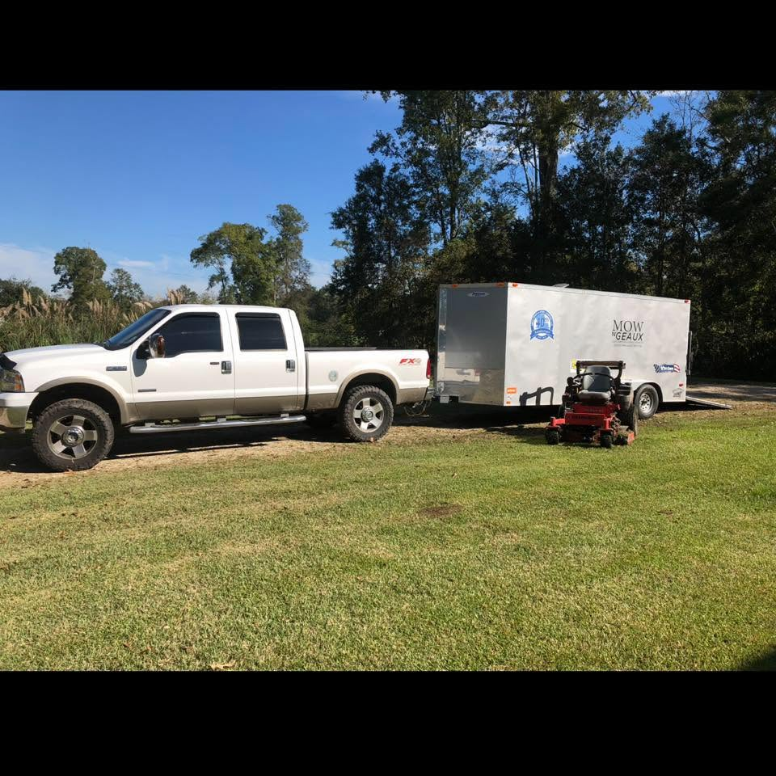
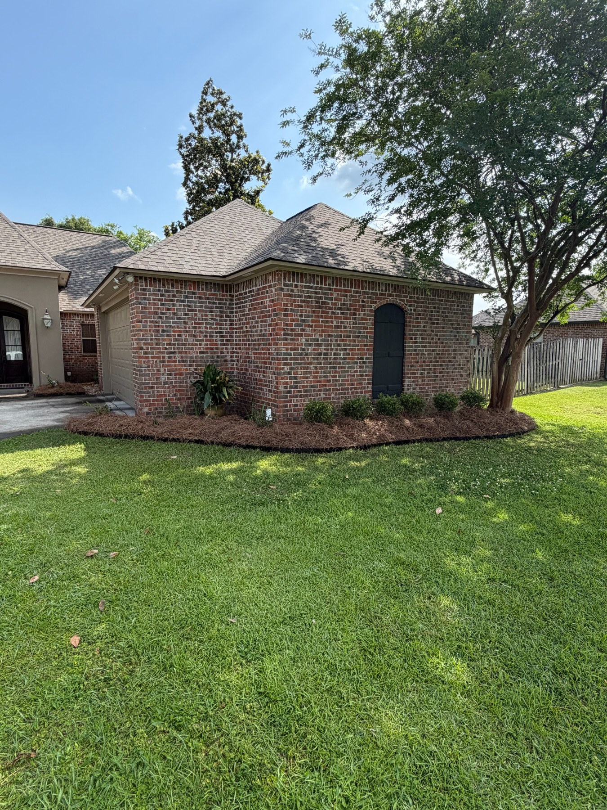
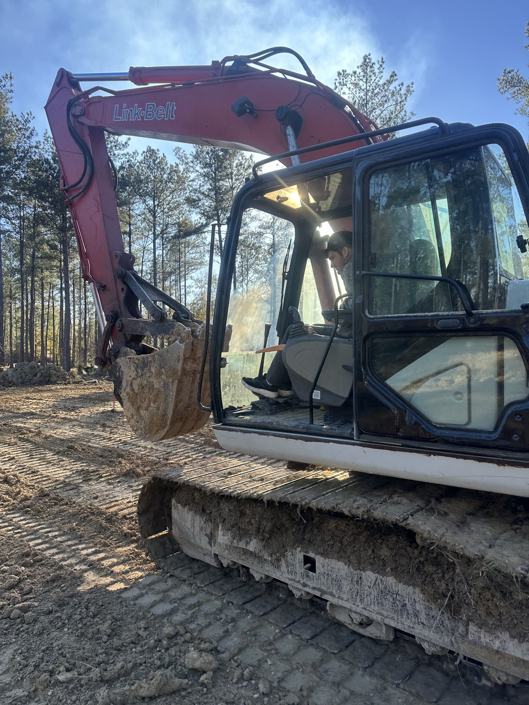

Lawn Maintenance
Routine mowing and finish work with clean edges and hard surfaces cleared before the crew leaves.
Services / Ascension Parish
Routine lawn maintenance, landscape projects, irrigation, site work, hauling, and pressure washing—grouped here so you can see the full scope without bouncing between separate pages.

Lawn Maintenance & Herbicide Application
Weekly and biweekly maintenance is built around how the property grows through the season. Each visit covers the cut, string trimming, edging, and blowing, with problem areas flagged instead of ignored.
Routine mowing and finish work with clean edges and hard surfaces cleared before the crew leaves.
Selective and non-selective treatments applied to the right problem area as part of a practical maintenance plan.

Cleanup, Design & Build, and Sod Installation
From cleanup and bed renovation to full landscape installs and sod preparation, the work is planned around the actual property—sun, drainage, traffic, and the way the finished yard needs to function.
Hedge pruning, weed removal, bed cleanup, and fresh material to bring existing landscaping back under control.
Design, demolition, bed shaping, planting, edging, and installation carried through as one coordinated project.
Site prep, grading, delivery, and installation so new turf starts on workable ground instead of covering the problem.

Irrigation
New zones, drip lines, repairs, and seasonal adjustments keep lawns and landscape beds watered without letting a broken head, valve, or coverage gap turn into a larger problem.
Install work is trenched and tied in cleanly, then tested before the job is called finished.

Dirt Work, Site Work & Dump Trailer Services
Grading, leveling, excavation, material delivery, and debris haul-off can be coordinated on one schedule so the site is ready for the next phase instead of waiting on separate crews.
Grading, leveling, excavation, trenching, and site preparation for drainage, sod, access, or the next construction step.
Material delivery, debris haul-off, and site cleanup quoted around the actual load and job scope.

Pressure Washing
Driveways, patios, walkways, and fences are cleaned with pressure and technique matched to the material—not one setting used everywhere.
Concrete, pavers, and fence surfaces are approached differently so the cleaning method fits what is being cleaned.

Your property is next
Send the details for a quote, or call if you'd rather talk through the job.